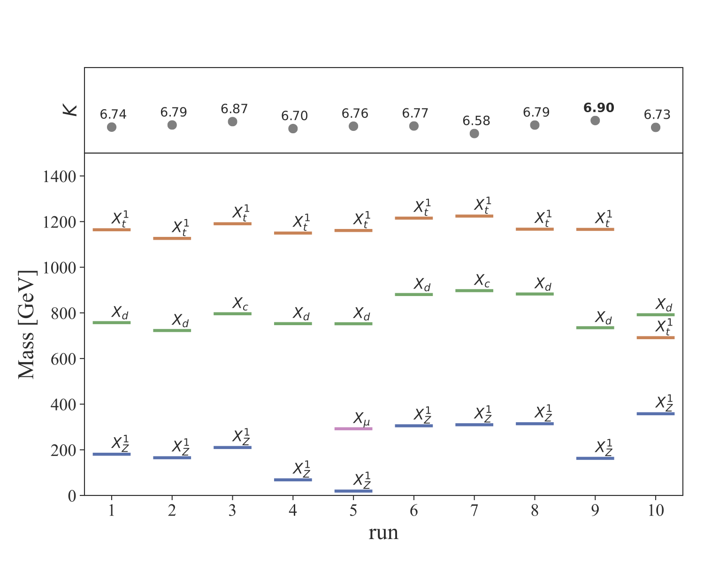

| Protomodel Builder | 
|
Working principle: The purpose of the Protomodel Builder is to identify potential dispersed signals of new physics in the slew of published LHC results. It employs a random walk algorithm to introduce sets of new particles, dubbed protomodels, which are tested against simplified-model results from ATLAS and CMS, exploiting the SModelS software framework. A combinatorial algorithm identifies the set of analyses and/or signal regions that maximally violates the SM hypothesis, while remaining compatible with the entirety of LHC constraints in our database. Employing a multi-level optimization procedure, we may thus bring to light potential dispersed signals, which might otherwise be missed simply because each individual experimental analysis only looks at a fraction of the LHC data.
Results from section 5.2 of pioneer paper (draft), 2020
|  Fig. 8 from paper |
In this paper, we performed 10 runs over the "real" SModelS database (v1.2.4), each employing 50 walkers and 1000 steps/walker. The characteristics of the winning models (i.e. the protomodels with highest test statistic K, shown in Fig. 8 in the paper) from each run can be found here: real #1 - real #2 - real #3 - real #4 - real #5 - real #6 - real #7 - real #8 - real #9 - real #10 The absolute winner is the hiscore model from run #9 with K=6.9 (see plot on the left). Closure tests, using the winning model of run #9 above as injected signal:
|
last update 21-12-2020